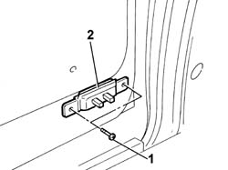

5505B30 WIRING BUILT INTO SLIDING SIDE DOOR LEFT OR RIGHT R R
- Path
- Procedures > 55 ELECTRICAL EQUIPMENT > 5505 INSTRUMENT/GUAGE ELECTRICAL WIRING > 5505B DOOR,BOOT AND BONNET WIRING. > 5505B30 WIRING BUILT INTO SLIDING SIDE DOOR LEFT OR RIGHT R R
- Kind
- repair procedure (removal / refitting; the operation number is the code)
- Applies to
- all engines; all production periods
- Interactive page
- https://sloeber94.github.io/elrnDB-fDct/en/#/244001338
Applies to: all engines; all production periods
 Removing
Removing
 Refitting
Refitting- Disconnect the negative battery terminal.
Op. 7040B18 L/H OR R/H SIDE TRIM (ONE) OF LUGGAGE COMPARTMENT/LOAD PLATFORM - ARRANGE
1. Undo the bolts fixing the sliding contact support to the sliding side door.
2. Release the sliding contact support on the sliding side door.

Applies to: all engines; all production periods
- Release the wiring from the retaining springs.
- Disconnect the electrical connector from the sliding side door lock.
- Release the wiring from the sliding contact housing.
Applies to: all engines; all production periods
Refitting
Removing- Insert the wiring in the sliding side door frame.
- Connect the electrical connector to the sliding side door lock.
- Secure the sliding contacts support to the sliding side door tightening the fixing bolts.
- Secure the wiring to the retaining springs.
Op. 7040B18 L/H OR R/H SIDE TRIM (ONE) OF LUGGAGE COMPARTMENT/LOAD PLATFORM - ARRANGE
- Connect the negative battery terminal.